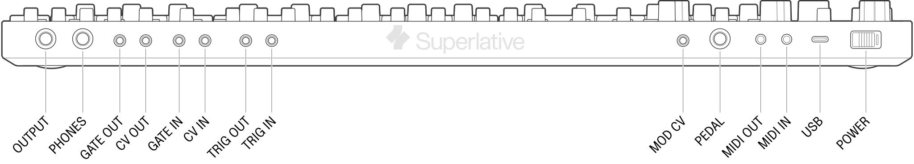

To turn the SB01 on, slide the power switch on the left corner of the
unit towards the right.
The SB01 is powered by a rechargeable battery. To charge the battery,
connect a USB-C power supply to the USB connection on the
back of the unit. The LED above the TUNE knob should turn
green to indicate that the unit is charging. When the synth is on but
not charging, this light will be amber. The battery can be charged both
while the synth is switched on or while it is switched off.
If the unit is low on battery, the LED above the TUNE
knob will begin blinking. If depleted, the LED will flash but the synth
will not play until charged again.
Checking the battery level
To check the battery level of the SB01, hold down the
SHIFT button and then press and hold the
BANK SELECT button. The approximate battery level will be
indicated by the seven LEDs in the sequencer section.
Powering external gear
The SB01 can also be used as a power source for external gear using
it’s built-in battery. Simply connect a device to the USB port on the
back of the synth while power is active- you can even charge your phone
from it.
Rear panel connections

FIGURE 1.1
USB: Used to charge the SB01. Connect to a computer for
USB MIDI, device configuration, and firmware updates.
MIDI IN: TRS Type-A 3.5mm MIDI input.
MIDI OUT: TRS Type-A 3.5mm MIDI output.
PEDAL: Hold/Sustain pedal input.
MOD CV: Mod CV input for VCO/VCF (0 ~ 5v)
TRIG IN: Trigger input, +2.5V or higher.
TRIG OUT: Trigger output. 5V signal.
CV IN: 1V / 1Oct Control voltage input, 0-7V
GATE IN: Gate input, +2.5V or higher.
CV OUT: CV output from the EXTERNAL
engine.
GATE OUT: Gate signal from the EXTERNAL
engine.
PHONES: Stereo headphone output.
OUTPUT: Line level audio ouput.
Controls
FIGURE 1.2
TUNE
MODULATOR
LFO/CLK RATE
WAVEFORM
VCO
MOD
RANGE
PULSE WIDTH Slider
PULSE WIDTH Switch
SOURCE MIXER
PULSE Level Slider
SAW Level Slider
SUB OSC Level Slider
SUB OSC Selector Switch
VCF
FREQ
RES
ENV
MOD
KYBD
VCA Envelope Switch
ENV
Trigger Mode
A
D
S
R
VOLUME
PORTAMENTO
PORTAMENTO Mode Toggle
TRANSPOSE Toggle
BENDER
BENDER VCF
BENDER VCO
LFO MOD
Modulator (LFO/CLK)
FIGURE 1.3
The MODULATOR section houses a low-frequency oscillator
(LFO) and S/H (Sample & Hold) that can be used to modulate several
parameters across the synth including pitch, pulse width, and filter
cutoff.
The LFO/CLK RATE slider controls the frequency of the
LFO. The rate of cycling controls the speed of the arpeggiator and
sequencer unless they are driven by an external clock source using the
TRIG input.
The WAVEFORM switch selects the ouput shape of the LFO.
Triangle and square are the output waveforms from the LFO,
while the RANDOM output waveform is generated digitally. Each cycle of
the LFO will produce a new random modulation level that is held until
the next clock cycle. The noise waveform is the internal white noise
source and is not affected by the LFO rate control.
Voltage Controlled Oscillator
(VCO)
FIGURE 1.4
The voltage controlled oscillator (VCO) is where the sound of the
SB01 is created.
The MOD control adjust the amount that the LFO will
change the pitch of the oscillator.
The RANGE knob controls the pitch of the oscillator in
one octave steps from 16’ to 2’. When this knob is set to 8’ and the
TRANSPOSE is set to M, the lowest C note maps to the middle
C of a piano.
Pulse Width
Pulse width modulation allows control over the duty cycle of the
square wave, which is the proportion of time that a pulse waveform is
high or low.
For example, a square wave has equal parts high and low, like this:
FIGURE 1.5
While a wave with a narrower pulse width may look like this:
FIGURE 1.6
Both of these examples have the same frequency, but the harmonic
content of the pulse wave will vary in proportion to the width of the
pulses.
The PULSE WIDTH switch controls the mode that the pulse
width modulation will operate in.
When the switch is set to MANUAL, the
PULSE WIDTH slider will manually control the pulse width of
the square wave from 50% to 5%.
When the switch is set to LFO, the triangle wave LFO
will control the pulse width of the oscillator, and the
PULSE WIDTH slider will control the amount of modulation
that is applied.
When the switch is set to ENV , the envelope shape will
control the pulse width of the oscillator, and the
PULSE WIDTH slider will control the amount of modulation
that is applied.
Source Mixer
FIGURE 1.7
The Source Mixer section contains controls to mix together the
different waveforms created by the VCO into the timber of your
choosing.
The PULSE slider controls the amount of pulse waveform
that is mixed in. The pulse width is configured using the controls in
the VCO section.
The SAW slider controls the amount of sawtooth wave that
is mixed in.
The SUB OSC slider controls the amount of sub oscillator
that is mixed in. The sub oscillator is a waveform that is derived from
the main oscillator and will track the pitch of the main oscillator.
Using the SUB OSC switch, the sub oscillator can be
configured to be either a square wave one octave below the main
oscillator, a square wave two octaves below, or a 25% duty cycle pulse
wave two octaves below.
the NOISE slider controls the amount of white noise that
is mixed in.
Voltage Controlled Filter
(VCF)
FIGURE 1.8
The voltage controlled filter (VCF) is used to shape the spectral
properties of the raw sound coming from the Source Mixer section. The
VCF in the SB01 is a four-pole low-pass filter based on the IR3109.
The FREQ slider controls the cutoff point of the filter.
All the way up will allow all frequencies to pass through the filter.
All the way down will block all frequencies and will stop any sound from
coming out.
The RESonance slider controls the amount of filter
feedback (sometimes called emphasis) that is applied. This can create
anything from a pleasant squelchy sound, to harsh and shrill tones.
The ENV slider controls the amount of control that the
envelope generator has on the filter cutoff position.
The MOD slider controls the amount of control that the
LFO has on the filter cutoff position.
The KYBD slider will control the amount of offset that
is applied to the filter based on the control voltage of the note that
is played. This can be useful for creating a patch that is darker in the
lower notes, but gets brighter as the filter opens up in the higher
notes.
Self-Oscillation
With the resonance control set to maximum, the filter will feedback
into self-oscillation. This type of oscillation results in a pure sine
wave output with no harmonics.
To enable self-resonance, set FREQ to the minimum, and
set RES and KYBD to the maximum. The filter
output will track the note played to within 1%.
Voltage Controlled Amplifier
(VCA)
FIGURE 1.9
The voltage controlled amplifier (VCA) section controls the volume of
a note over time as it is played.
When the VCA is configured in GATE mode, the volume of
the note will be at the maximum as soon as a note is played, and will be
reduced to the minimum as soon as the note is released.
When the VCA is configured in ENV mode, the volume of
the note will be controlled over time based on the settings in the
envelope section.
Envelope Generator (ENV)
FIGURE 1.10
The envelope generator is a standard four-stage envelope. It can be
used to modulate pulse width, filter cutoff, and the VCA.
An envelop works in two stages. First, when the envelope is triggered
(typically by a keypress), it will increase its voltage to the maximum
amount in a period of time controlled by the “attack” parameter. Once
the maximum voltage has been reached, the envelope will move to another
voltage level determined by the “sustain” parameter. The time it takes
to get to the sustain level after the attack phase is controlled by the
“decay” parameter. The envelope will stay at the sustain level until the
note is let go.
Once the note is released, the envelope will return to zero voltage.
The amount of time this takes is controlled by the “release”
parameter.
FIGURE 1.5
The envelope is very powerful for shaping the properties of a sound,
especially when routed to the filter cutoff. For example, a typical
“pluck” sound has no attack, a short delay, no sustain, and no release,
while a “pad” sound may have a long attack and decay, a middling
sustain, and a long release.
Remember that attack, decay, and release all control the time, while
sustain controls the level.
On the SB01, the envelope controls are:
A - controls the attack time of the envelope
D - controls the decay time of the envelope
S - controls the envelope sustain level
R - controls the release time of the envelope
The ENV mode switch controls how the envelope is
triggered.
In GATE mode the envelope is started by a keypress event
and will transition to the release phase when the last key is let go. If
additional notes are played, the envelope will not reset to the
beginning.
In GATE+TRIG mode, the envelope will be started by a
keypress event and will transition to the release phase when any key is
let go. If additional notes are played, the envelope will reset at the
beginning for the new note.
In LFO mode, the envelope will be triggered by each
cycle of the LFO regardless if notes are played or not.
Portamento
FIGURE 1.10
Portamento is the musical term for continuous pitch glide or slew
between notes.
To enable portamento, toggle the PORTAMENTO switch to
either ON or AUTO. The time of the glide can
be controlled using the PORTAMENTO knob.
In the ON position, the SB01 will glide the pitch
between every note.
In AUTO mode, the SB01’s glide effect activates only
when you play a key while still holding a previous key. This
“hold-and-glide” allows for expressive control.
Example:
Hold the C key. Then, play the G key.
The oscillator will glide from C to G.
If you release the C key before playing G, no glide will occur.
In the OFF position, the glide effect will not be
applied to any played notes.
The SB01 has independent portamento states for each channel, so you
can operate either channel with any PORTAMENTO setting.
However, the portamento speed will be the same between both channels.
Moving the toggle in each mode refreshes the PORTAMENTO
state in each channel.
Arpeggiator
The Arpeggiator will automatically play any held notes as a
progressive arpeggio.
The speed of the Arpeggiator is controlled by the speed of the
LFO/CLK RATE. If the SB01 is configured to accept an external MIDI
clock, the speed of the Arpeggiator will instend be controlled by the
external MIDI clock.
Arpeggiator Modes
To enable the Arpeggiator, press any of the three Arpeggiator mode
buttons:
DOWN: plays the arpeggiated notes from highest to
lowest
U+D: plays the arpeggiated notes from lowest to
highest, and then back down to lowest
UP: plays the arpeggiated notes from lowest to
highest
DOWN + U+D + UP: plays the
arpeggiated notes in random order
You can switch modes while the Arpeggiator is playing.
Use the HOLD button to latch notes into the Arpeggiator
and free hands for adjusting the sound
To disable the Arpeggiator, press the currently illuminated
Arpeggiator mode button
Sequencer
The SB01 features a digital sequencer capable of storing and playing
up to 256 steps.
Tempo Control:
Adjust the tempo using the LFO/CLK RATE knob.
Connect an external clock signal to the TRIG input.
Synchronize with an external MIDI clock.
Sequence Loading
Start Recording: Press the LOAD button
and enter notes from the keyboard.
Stop Recording: Press the LOAD button
again.
Add Rests: While recording, press the
REST button to add an empty step.
Add Legato/Slides: While recording, press and hold
the LEGATO button to tie notes together.
Sequence Playback
Play: Press the PLAY button. The
sequence will loop continuously until stopped.
Stop: Press the PLAY button
again.
Sequencer Play Directions
To change the sequencer playback direction, hold SHIFT
and press any of the three Arpeggiator mode buttons:
DOWN: plays the sequence notes from last note to
first
U+D: reverses play direction after reaching the last
note
UP: plays the sequence from first note to last
DOWN + U+D + UP: plays the
sequence in random order
Tip: You can switch directions while the sequencer
is playing.
Both the INT and EXT tracks can have
independent sequencer directions.
Sequence directions are not retained when storing a sequence.
Storing and Recalling
Sequences
The SB01 has 64 memory locations split across two banks that can be
used for storing user sequences.
Each key on the keyboard represents a save location, of which there
are 32 total in each bank. The currently active sequence can be saved to
memory while while stopped or playing.
Saving a Sequence
Bank A: Press and hold SHIFT +
WRITE A + KEY (1-32)
Bank B: Press and hold SHIFT +
WRITE B + KEY (1-32)
Tip: Writing to a save location will overwrite any
existing stored sequence.
Select Active Bank
Hold the BANK SELECT button and press
WRITE A or WRITE B to select bank A or B for
sequence recall.
Recalling Sequences
Jump Mode:
Hold the JUMP button and press a KEY
location to jump to the stored sequence.
The target sequence will start immediately on the next clock
step
The target sequence can be restarted by pressing the same location
again.
Chain Mode:
Hold the CHAIN button and press a KEY
location to chain to the stored sequence.
The target sequence will start immediately after the current
sequence finishes playing.
Multiple KEY locations can be entered serially in this
recall mode, and the sequencer will chain all queued sequences in the
exact order of entry until repeating. :::
Modulo Mode:
Hold the JUMP + CHAIN buttons and press a
KEY location to “Modulo” jump to the stored sequence.
This mode will keep the absolute step number constant when jumping
sequences, allowing alternation between sequences while keeping the
underlying sequence length
Internal / External Channel
The SB01 has two parallel and independent sequencer channels for
Each channel button represents the active control window, which shows
the current state of the sequencer, arpeggiator, hold, and transpose
function for the selected channel. Both channels can be controlled
controlled together in BOTH mode.
INTERNAL Channel
The INTERNAL track will always correspond to the
internal synth “engine” of the SB01.
External Channel
The EXTERNAL track offers a layer of external control on
top of the internal synth, allowing the keyboard, arpeggiator, and
sequencer to control an external device that accepts CV, MIDI, or USB
MIDI.
BOTH mode
Hold the INTERNAL and EXTERNAL buttons
together to enter BOTH mode. While both channel LED’s are
lit, all button actions will now apply to both channels.
When a function is active in both tracks, the button will toggle
between INT and EXT channel colors to reflect
this. Exit BOTH mode by pressing INT or EXT to enter an individual
channel’s control.
Recalling Sequences
Jump Mode:
Hold the JUMP button and press a KEY
location to jump to the stored sequence.
Bender
FIGURE 1.6
The main performance element of the bender section is the
joystick.
Pitch Modulation / Vibrato
Pushing the joystick up will increase the amount of LFO modulation
that is sent to the VCO pitch. The maximum amount of added modulation is
controlled by the LFO MOD knob above the joystick.
Increasing the knob will increase the depth of pitch modulation that is
added when the joystick is pushed up. The rate of LFO modulation is
controlled by the LFO/CLK RATE slider in the
LFO section.
Pitch Bend and Filter Control
The left and right direction of the bender joystick can be configured
to control both the oscillator pitch and the filter cutoff. The
BENDER VCO andBENDER VCF sliders control the
amount of change to each parameter when the joystick is moved left or
right. At the lowest slider position, no change will be made.
Connect the synthesizer to your computer using a USB-C cable and
click the on-screen notification.
If you don’t see a notification, try directing your browser to control.playsuperlative.com.
When the device is connected, the app will look like FIGURE 2.1.
FIGURE 2.1
Enabling MIDI for
internal/external machines
Use the switch matrix at the top of the controls app to enable or
disable TRS and USB MIDI for the internal and external engines
(channels).
Setting MIDI channels
Use the MIDI CHANNEL IN and
MIDI CHANNEL OUT selectors to set which channels the synth
will listen to and transmit MIDI information on.
Enabling MIDI clock (MIDI
sync)
Use the MIDI CLOCK TRS IN switch to enable or disable
MIDI clock sync on the TRS MIDI input.
Use the MIDI CLOCK USB IN switch to enable or disable MIDI
clock sync on the USB MIDI input.
When enabled, the synth will listen to incoming MIDI clock messages and
clock the sequencer and arpeggiator from this clock source, ignoring the
LFO/CLK rate.
The CLOCK SUBDIVISION slider divides the incoming MIDI
clock and sets the speed of the arpeggiator and sequencer.
Tip: Use the sun/moon icon at the top right of the
app to switch between light and dark mode.
Firmware Update
To enter firmware update mode, perform the following:
Turn off your SB01 using its power switch
Connect to your computer with a USB-C cable
Press and hold the SHIFT key while turning power
on
The LFO/CLK RATE LED should now blink orange and
green.
In a compatible browser, navigate to firmware.playsuperlative.com. Note that in some
instances your browser may automatically prompt you for this when the
device is first connected.
To exit firmware update mode, simply turn your synth on and off
again.
Browser
Windows
Mac OS
Linux*
Chrome
✔
✔
✔
Opera
✔
✔
✔
Edge
✔
✔
—
Safari
—
❌
—
Firefox
❌
❌
❌
* For Linux users, you may have to add a udev rule to allow
access to the USB device. Refer to this guide for more
information.
Linux WebUSB Compatibility
Linux generally don’t ship with the necessary permissions to let the
user open USB devices. If you are experiencing problems with WebUSB (the
feature that allows control.playsuperlative.com and firmware.playsuperlative.com to function), this is
most likely the issue.
Please note that these instructions are for Debian-like
distributions, the fix for your distro may be different.